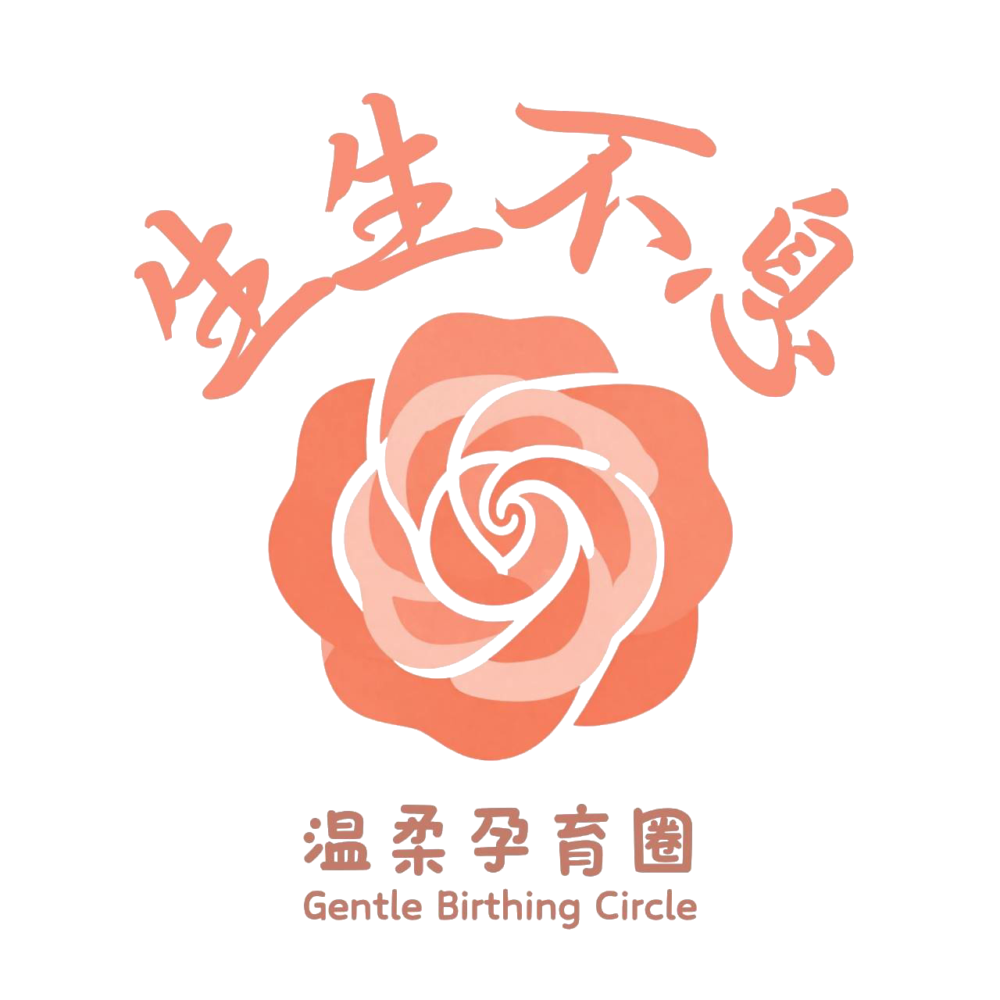

Gentle Birthing Circle
《單親媽×光譜小孩的共創與成長》
這一場，這次沒有成行
謝謝每一個看過、問過、想過要來的妳。
這是宥綸從自己的生命裡長出來的一場——一個媽媽如何在婚姻結束之後，重新學習定義「家」；又如何在發現孩子跟自己想像的不同時，選擇與他站在一起。
「當我先成為自己的定錨，自然就成為孩子在這個浮動宇宙裡，起步的源頭。」
這樣的一場，我們希望之後還有機會好好辦一次。
孕育圈每個月都有新的一場——
線上的深度分享、新月夜的公益女人圈、實體的圍圈共聚。